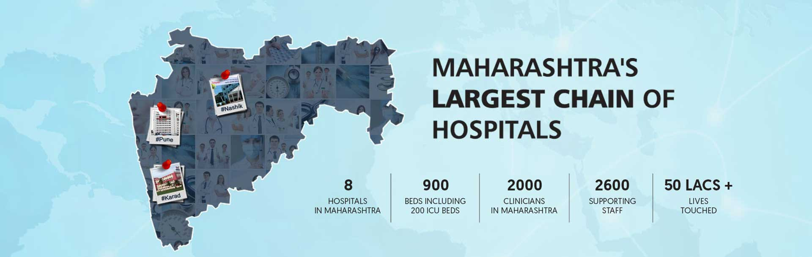

Sahyadri Hospitals is the largest chain of hospitals in Maharashtra. It is the brainchild of Dr. Charudutt Apte, one of India’s most renowned Neurosurgeons and more importantly an ardent practitioner of ethical medical practices. It was his philosophy to make quality healthcare available, accessible, & accountable and not restrict as a privilege to the few, which still stands as the group’s pivotal touchstone.
The Sahyadri group has 8 Hospitals with more than 900 beds and 200 ICU beds. Currently we have more than 2000 clinicians along with 2600 supporting staff. Sahyadri Hospitals has touched the lives of more than 50 lakh people by providing quality care.
Our Sahyadri hospitals are easy to reach due to their strategic locations in the cities of Pune, Nashik and Karad.